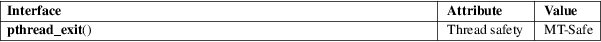

pthread_exit − terminate calling thread
POSIX threads library (libpthread, −lpthread)
#include <pthread.h>
[[noreturn]] void pthread_exit(void *retval);
The pthread_exit() function terminates the calling thread and returns a value via retval that (if the thread is joinable) is available to another thread in the same process that calls pthread_join(3).
Any clean-up handlers established by pthread_cleanup_push(3) that have not yet been popped, are popped (in the reverse of the order in which they were pushed) and executed. If the thread has any thread-specific data, then, after the clean-up handlers have been executed, the corresponding destructor functions are called, in an unspecified order.
When a thread terminates, process-shared resources (e.g., mutexes, condition variables, semaphores, and file descriptors) are not released, and functions registered using atexit(3) are not called.
After the last thread in a process terminates, the process terminates as by calling exit(3) with an exit status of zero; thus, process-shared resources are released and functions registered using atexit(3) are called.
This function does not return to the caller.
This function always succeeds.
For an explanation of the terms used in this section, see attributes(7).

POSIX.1-2008.
POSIX.1-2001.
Performing a return from the start function of any thread other than the main thread results in an implicit call to pthread_exit(), using the function’s return value as the thread’s exit status.
To allow other threads to continue execution, the main thread should terminate by calling pthread_exit() rather than exit(3).
The value pointed to by retval should not be located on the calling thread’s stack, since the contents of that stack are undefined after the thread terminates.
Currently, there are limitations in the kernel implementation logic for wait(2)ing on a stopped thread group with a dead thread group leader. This can manifest in problems such as a locked terminal if a stop signal is sent to a foreground process whose thread group leader has already called pthread_exit().
pthread_create(3), pthread_join(3), pthreads(7)